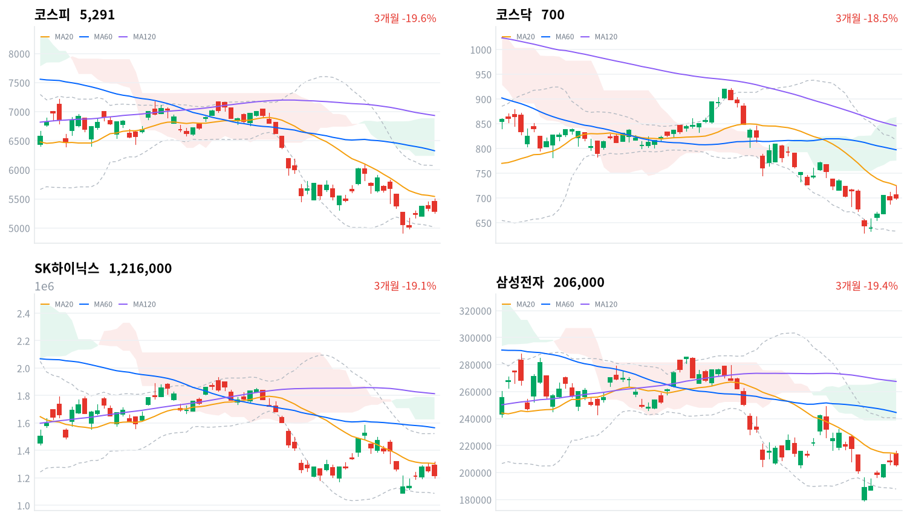

엔비디아 실적을 이틀, 앤트로픽 상장을 사흘 앞둔 한국 장에서 외국인이 1조3,287억원을 순매도했고(당일 잠정), 코스피는 11월 13일 저가 5,259를 깨고 5,100.50에 마감했다. 코스닥은 4.86% 내려 더 약했다.
은행 업종은 11개 종목 가운데 10개가 올랐고 국고채 금리는 내려, 매도는 반도체·전자부품에 몰렸다. 11월 18일 새벽 엔비디아 실적 뒤 외국인이 다시 사는지가 이 하락의 성격을 가른다.
엔비디아 실적(11월 18일 새벽, 한국 시간)과 앤트로픽 상장(11월 19일)을 앞둔 첫 세션에서 외국인이 코스피를 1조3,287억원 순매도했고(당일 잠정), 개인이 1조2,904억원을 순매수해 이를 받았다. 매도가 반도체로 몰린 같은 날 은행·손해보험·항공 업종은 올랐고 국고채 금리는 내렸다.
장 마감 뒤 보도는 하락의 원인으로 엔비디아의 경영 공백, 엔비디아가 고객 금융지원을 줄일 것이라는 전망, 미국 법원의 D램 담합 소송 진행을 들었다. 이 재료들이 반도체를 눌렀다는 데는 동의한다. 다만 이날 새로 나온 엔비디아 수요나 HBM 발주 숫자는 없었고, 하락이 업종 전반이 아니라 AI 하드웨어에 몰렸다. 위험 회피가 시장 전체로 번졌다면 기업이 돈을 빌리는 비용부터 올랐을 텐데, 회사채 AA- 3년물과 국고채 3년물의 금리차는 67.3bp로 0.2bp 좁혀졌다. 이 금리차는 최근 2년(531거래일) 가운데 넓은 쪽 18% 안에 있어 원래 높던 수준이 이날 더 오르지 않은 것이다. 시장이 엔비디아 실적에 무엇을 기대하는지 잴 옵션·선물 가격은 없다.
그래서 이날 하락은 확인 일정을 앞두고 AI 하드웨어 대형주 노출을 먼저 줄인 매도의 비중이 크다고 본다. 거래대금은 SK하이닉스(4.80조원)와 삼성전자(3.22조원)에 몰렸고, 대표 ETF 기준 반도체 섹터는 8.96% 내려 12개 섹터 가운데 가장 약했다. 시장 일각에서는 미국 반도체에 대한 글로벌 헤지펀드 순익스포저가 고점 대비 67% 줄어 반도체가 위험 축소를 거쳐 단기 반등 여지가 있다는 시각도 있었다. 다른 설명은 수요 전망 자체가 내려가 11월 5~9일 급락 뒤의 되돌림이 끝났다는 것이다. 시장 일각에서는 세미애널러시스가 2028년 HBM 수요 전망을 30% 낮췄다는 전언을 들어 AI 투자 전망이 내려가고 있다는 시각도 있었다. 이 전망 하향은 1차 보고서로 확인되지 않았다. 외국인이 팔고 은행이 오른 조합은 지수 안에서 자금이 변동성이 낮은 업종으로 옮겨 갔다는 해석과 부합하지만, 업종별 순매매 자료가 없어 확인하지는 못한다. 두 설명은 엔비디아 실적 뒤 11월 18일 외국인 코스피 순매수 방향과 11월 20일 코스피 종가에서 구분된다.
새로 제안할 상품은 없다. 반도체·AI 하드웨어 테마의 한국 가격 흐름은 이날 크게 약해졌지만, 엔비디아 가이던스를 보기 전에 그 이유가 수요 하향인지 일정 앞 위험 축소인지 판단할 자료가 없다. 금융 테마는 은행 업종이 하락장에서 올라 방어 성격을 다시 보였지만, 이를 재평가로 읽을 이익·배당 자료는 새로 나오지 않았다. 하루 급락만으로 반도체의 추세가 다시 꺾였다고 보기는 이르다. 가장 가까운 결정적 일정은 11월 18일 새벽 엔비디아 실적이고, 그 뒤 첫 정규장에서 외국인이 코스피 순매수로 돌아서는지를 기다린다.
코스피가 11월 13일 기준 볼린저 밴드 하단 5,012 아래에서 마감하면, 이날 하락이 확인 일정을 앞둔 AI 하드웨어 위험 축소라는 판단을 철회한다. 그 경우 AI 투자 전망 하향으로 11월 5~9일 급락 뒤의 되돌림이 끝나고 하락이 다시 시작됐다는 설명을 우선 설명으로 본다.
출처: 뉴스1, 한국경제TV, 이데일리, 헤럴드경제, 파이낸셜뉴스
11월 13일 미국 세션에서 S&P 500은 0.40%, 나스닥은 0.91% 내렸고 다우는 0.10% 올랐다. 11월 16일 아시아도 닛케이가 2.42%, 상해종합이 0.87% 내렸고 반도체 비중이 큰 대만가권이 6.03% 내려, 반도체 매도는 한국만의 일이 아니었다. 항셍만 0.49% 올랐다. (2026년 11월 19일 정정: 처음에는 이날 아시아 지수 값을 받지 못했다고 적고, 아래 표에 닛케이·항셍·상해종합·대만가권의 11월 13일 값을 실었다. 11월 16일 종가로 바로잡았다.)
코스피는 전일 종가 5,290.53보다 조금 높은 5,305.40에서 출발했다. 갭은 거의 없었고, 하락은 장이 열린 뒤 미국 선물과 함께 진행됐다. 한국 정규장 동안 나스닥 선물은 1.49%, S&P 500 선물은 0.67% 내렸다.
코스피는 고가 5,327.99와 저가 5,069.83 사이를 오간 뒤 하루 범위의 아래쪽 12% 지점에서 마감했다. 코스닥은 고가 708.34에서 밀려 저가 664.98과 거의 같은 665.65로 끝났다. 원화는 주식이 밀리는 동안에도 크게 약해지지 않았다.
외국인이 반도체 대형주를 팔고 개인이 받은 날이다. 외국인 매도는 삼성전자와 SK하이닉스에 몰렸다는 보도가 나왔고, 하락은 SK하이닉스·삼성전자·삼성전기 같은 AI 하드웨어 종목에 집중됐다. 은행·손해보험·항공 같은 내수·저변동 업종은 올랐다. 장중 투자자별 흐름과 시간외 거래 자료는 없어, 10시대 급락을 어느 주체가 먼저 시작했는지는 가리지 못한다.
출처: 한국면세뉴스, 뉴스1, 서울신문
코스피는 3.59% 내린 5,100.50, 코스닥은 4.86% 내린 665.65로 마감했다. 코스피는 3거래일 연속 내려 11월 13일 저가 5,259를 3.02% 밑돌았고, 11월 13일 기준 볼린저 밴드 하단 5,012까지는 88.61포인트만 남았다.
| 지수 | 종가 | 등락률 | 시가 | 고가 | 저가 | 전일 종가 |
|---|---|---|---|---|---|---|
| 코스피 | 5,100.50 | -3.59% | 5,305.40 | 5,327.99 | 5,069.83 | 5,290.53 |
| 코스닥 | 665.65 | -4.86% | 705.88 | 708.34 | 664.98 | 699.66 |
해석을 바꾸는 변곡점은 오전 10시대 하나였다. 코스피는 10시 5,252에서 10시 30분 5,155로 한 구간에 100포인트 가까이 밀려 11월 13일 저가를 내줬고, 11시 30분 5,170까지 잠시 반등한 뒤 오후 내내 다시 밀렸다. 종가는 고가보다 4.27% 낮아, 저가 매수가 오후 하락을 되돌리지 못했다.
| 주체 | 순매수(억원) |
|---|---|
| 개인 | +12,904 |
| 외국인 | -13,287 |
| 기관 | -4,562 |
| 주체 | 순매수(억원) |
|---|---|
| 개인 | +3,674 |
| 외국인 | -2,005 |
| 기관 | -1,535 |
코스피 하락은 외국인과 기관이 함께 판 결과다. 외국인은 1조3,287억원을 순매도해(전일 5,419억원 순매도, 당일 잠정) 2거래일 연속 팔았고, 규모는 11월 6일(2조6,892억원 순매도) 이후 가장 컸다. 기관도 4,562억원을 순매도했다(전일 59억원 순매도). 개인이 1조2,904억원을 순매수해(전일 145억원 순매수) 두 주체의 매도 대부분을 받았다. 전일 값은 이날 다시 받은 잠정치라 지난 글의 값(외국인 5,449억원 순매도)과 다르고, 장 마감 뒤 보도 집계도 외국인 순매도를 이 값과 다르게 잡아 확정치에서 숫자가 바뀔 수 있다.
이번 매도는 11월 10~12일 외국인 순매수가 되돌림의 시작이 아니었을 수 있다는 점을 보여 준다. 11월 3일부터 16일까지 10거래일 동안 외국인은 코스피를 10조8,910억원 순매도했고, 그 사이 순매수한 날은 11월 10~12일 3거래일뿐이다. 개인이 받은 물량이 신용으로 산 것인지는 투자자별 자료로 가릴 수 없다.
코스닥에서는 외국인이 2,005억원(전일 806억원 순매도), 기관이 1,535억원(전일 1,259억원 순매수)을 순매도했다. 기관이 순매도로 돌아선 날 코스닥은 코스피보다 더 내렸고, 개인이 3,674억원을 순매수했다.
장중 누적 수급과 프로그램 매매는 받을 수 있는 자료가 없어 싣지 않는다.
출처: 뉴스1, 남도일보
| 순위 | 종목/ETF | 구분 | 거래대금 | 비고 |
|---|---|---|---|---|
| 1 | SK하이닉스 | 개별주 | 4.80조원 | - |
| 2 | 삼성전자 | 개별주 | 3.22조원 | - |
| 3 | 반도체 테마 ETF | 테마·롱 | 1.65조원 | 28종 합산 |
| 4 | 삼성전자우 | 개별주 | 0.83조원 | - |
| 5 | 삼성전기 | 개별주 | 0.75조원 | - |
| 6 | SK스퀘어 | 개별주 | 0.56조원 | - |
| 7 | KODEX CD금리액티브(합성) | 단기금리·현금성 | 0.43조원 | - |
| 8 | 삼성SDI | 개별주 | 0.32조원 | - |
| 9 | 2차전지 테마 ETF | 테마·롱 | 0.24조원 | 14종 합산 |
| 10 | SK하이닉스 레버리지 | 단일종목 레버리지·롱 | 0.21조원 | 5종 합산 |
단위 백만원 원본을 조 단위로 환산했다. 같은 기초자산 ETF는 방향별로, 같은 테마 섹터 ETF는 테마별로 묶고 지수·해외 ETF는 제외했다.
거래는 급락한 반도체 대형주에 몰렸다. SK하이닉스와 삼성전자가 상위 10개 합계의 62%를 차지했고, 반도체 테마 ETF 28종 합산(1.65조원)이 3위였다. 상위 10개 가운데 7개가 메모리·전자부품 종목이거나 반도체 상품이다. 거래대금이 몰린 반도체의 주가는 크게 내렸으므로, 거래가 많았다는 사실은 누군가 팔고 누군가 샀다는 뜻일 뿐 반도체로 돈이 들어왔다는 증거가 되지 않는다. SK하이닉스 단일종목 레버리지 ETF 5종에도 0.21조원이 거래됐지만 투자자별 자료가 없어 어느 방향의 거래였는지는 알 수 없다.
현금성 상품인 KODEX CD금리액티브(0.43조원)가 7위에 오른 것은 주식에서 뺀 돈이 단기금리 상품에 머물렀을 가능성과 부합하지만, 이 상품의 거래대금도 순유입을 보여 주지는 않는다.
하락은 업종 전반보다 반도체에 몰렸다. 대표 ETF 기준 12개 섹터 가운데 반도체가 8.96% 내려 가장 약했고, 은행(+1.01%)·방산(+0.67%)·소프트웨어(+0.07%)는 올랐다. 반도체는 1주 기준으로는 아직 3.12% 올라 있지만, 1개월 기준으로는 22.82% 내린 상태다.
업종 단위로 보면 오른 업종은 내수·저변동 쪽에서 폭넓게 올랐다. 은행(+1.55%)은 11개 종목 가운데 10개, 항공사(+4.03%)는 9개 가운데 6개, 손해보험(+2.92%)은 12개 가운데 6개가 올랐다. 레저용장비와제품(+2.91%)은 13개 가운데 3개만 올라 개별 종목이 끌었다. 같은 금융 안에서도 증권(-0.97%)은 39개 가운데 3개만 올라, 거래 대금에 이익이 묶인 업종은 하락장의 영향을 받았다. 철강(-2.39%)·핸드셋(-2.12%)·건설(-1.93%)도 내렸다. 업종 분류에는 반도체 업종 행이 따로 없어(1,556개 종목이 묶인 「기타」가 2.43% 내렸다) 업종 표만으로 반도체 종목의 상승 비율은 알 수 없다.
이날은 개별 종목의 종가와 등락률 자료를 받지 못해 지수를 움직인 종목 묶음을 싣지 않는다. 보도로 확인된 재료만 적는다.
SK하이닉스·삼성전자·삼성전기는 크게 내렸다는 보도가 나왔다. 엔비디아 경영 공백과 고객 금융지원 축소 전망, 미국 법원의 D램 담합 소송 진행이 재료로 거론됐다. 삼성SDI는 미국 주피터파워와 ESS용 LFP 배터리 장기 공급 계약을 발표한 뒤 장중 올랐다가 하락 마감했다는 보도가 나왔고, 반락의 특정 재료는 확인되지 않았다. 항공사 업종 상승은 확인된 재료가 없다. 은행주는 코픽스가 2년 8개월 만에 가장 높아졌다는 보도와 금리 상승기 방어주 매력이 부각됐다는 증권사 분석이 함께 나왔다.
출처: 뉴스1, 한국경제TV, 헤럴드경제, 파이낸셜뉴스, 재경일보, 뉴스핌, 비즈니스포스트
국고채 금리는 주식 급락일에 안전자산 쪽으로 움직였다. 10년물은 2.0bp 내린 3.981%로 하루 만에 3%대로 돌아왔고, 3년물은 1.6bp 내린 3.743%로 마감했다.
| 지표 | 금리 | 전일比(bp) | 기준일 |
|---|---|---|---|
| 국고채 3년 | 3.743% | -1.6 | 2026-11-16 |
| 국고채 10년 | 3.981% | -2.0 | 2026-11-16 |
| CD 91일 | 3.38% | +1.0 | 2026-11-16 |
| 회사채 AA- 3년 | 4.416% | -1.8 | 2026-11-16 |
| 한국은행 기준금리 | 3.00% | 0.0 | 2026년 10월 기준 |
10년물이 조금 더 내려 커브는 거의 그대로였다. 10년물과 3년물의 금리차는 23.8bp로 0.4bp 좁혀졌고, 최근 2년(531거래일) 가운데 좁은 쪽 22% 안에 있다. 이날 국고채 10년물 입찰이 직전 시장금리보다 낮은 금리에 낙찰되고 응찰도 많았다는 보도가 나와, 장기물 수요가 금리 하락을 받쳤다. 국고채 입찰 담합 과징금이 부과된 뒤 처음 열린 10년물 입찰이었다.
단기 쪽은 방향이 달랐다. CD 91일 금리는 1.0bp 올랐고, 3년물과 기준금리의 차는 74.3bp로 최근 2년(531거래일)의 한가운데쯤에 있다. 이 차에는 정책 경로와 기간프리미엄이 섞여 있어, 11월 26일 금통위에서 시장이 인상을 얼마나 기대하는지를 그대로 보여 주지는 않는다. 회사채 AA- 3년물은 1.8bp 내려 국고채 3년물과 거의 같은 폭으로 움직였다. 원/달러는 한국장 시간대 1,330원대 안에서 움직였다.
국고채 10년 3.981%, 3년 3.743%(11월 16일): (3.981 − 3.743) × 100 = 23.8bp, 변화 −0.4bp(= −2.0bp − (−1.6bp)). 회사채 AA- 3년 4.416%: (4.416 − 3.743) × 100 = 67.3bp, 변화 −0.2bp(= −1.8bp − (−1.6bp)).
출처: 연합뉴스, 이데일리
| 미국 참조 지수 | 구분 | 관측 | 등락률 | 업종 내 상승 비율 | 기준일 |
|---|---|---|---|---|---|
| 반도체·AI 하드웨어 | 지수 | 대만가권 | -6.03% | – | 11/16 |
| 방산 | 업종 | 우주항공과국방 | +0.05% | 29% | 11/16 |
| 산업재 | 업종 | 조선 | -0.67% | 6% | 11/16 |
| 금속·광업 | 업종 | 철강 | -2.39% | 14% | 11/16 |
| 금속·광업 | 업종 | 비철금속 | -1.13% | 22% | 11/16 |
| 금융 | 업종 | 은행 | +1.55% | 91% | 11/16 |
| 금융 | 업종 | 증권 | -0.97% | 8% | 11/16 |
| 소프트웨어 | 업종 | IT서비스 | -1.79% | 26% | 11/16 |
| 일본 | 지수 | 닛케이 | -2.42% | – | 11/16 |
| 중국 | 지수 | 항셍 | +0.49% | – | 11/16 |
| 중국 | 지수 | 상해종합 | -0.87% | – | 11/16 |
원/달러는 한국장 시간대 장 초반 1,337원(09:00)이 고점이었고, 외국인이 1조원 넘게 주식을 판 오후에도 그 위로 오르지 않은 채 1,335원(15:30)에서 관측이 끝났다. 해외주식 펀드의 대기 자금이 달러를 사는 비용은 한국 주식 급락에도 거의 오르지 않은 셈이다. 주식 매도 대금이 곧바로 달러 수요로 옮겨 갔다는 흔적은 이 범위에서 보이지 않는다.
금융은 업종 안에서 갈렸다. 은행은 1.55% 올라 상승 비율이 91%였지만, 증권은 0.97% 내리고 상승 비율이 8%에 그쳤다. 금리 수익에 기대는 은행은 하락장의 방어처로 쓰였고 거래 대금에 기대는 증권은 지수를 따라 내렸다는 뜻이어서, 미국 금융 테마를 볼 때도 같은 금융 안에서 은행과 증권·자산운용을 나눠 볼 근거가 된다. 반도체는 대만가권이 6.03% 내려 한국만의 매도가 아니었다. 공통 재료인 엔비디아 뉴스에 한국과 미국 선물이 함께 반응했을 수 있어, 11월 16일 미국 정규장에서 반도체주가 한국만큼 빠지는지가 이 매도가 아시아만의 것인지를 보여 준다.
젠슨 황 전 CEO가 물러난 엔비디아가 그의 복귀를 추진한다는 보도가 나온 데 이어, 베선트 재무장관이 외부 인사 영입과 대중 우회 수출 의혹에 10일 안에 답하라고 요구했다는 보도가 나왔다. 엔비디아가 고객에게 해 온 지분투자·데이터센터 차입 보증·컴퓨팅 임대 약정을 줄일 것이라는 전망도 보도됐다.
고객 금융지원이 줄면 엔비디아 칩을 빌려 쓰는 클라우드 업체의 설비투자가 줄고, 그 업체들이 사는 서버의 HBM 수요가 줄어 SK하이닉스·삼성전자의 이익 전망이 내려간다. 아직 그 발주·가격이 바뀌었다는 자료는 없고, 이날 가격은 이익보다 먼저 멀티플에서 반응했다. 다음 분기점은 11월 18일 새벽(한국 시간) 엔비디아 실적과 가이던스이며, 고객 금융지원 언급이 HBM 수요 판단을 가른다. 베선트 장관이 요구한 답변 시한의 정확한 날짜는 확인되지 않았다.
미국 캘리포니아 북부연방지법이 11월 14일(현지) 삼성전자·SK하이닉스·마이크론의 담합 집단소송 기각 신청을 받아들이지 않았다는 보도가 나왔다. 본안 판결이 아니라 심리를 이어 간다는 결정이라, 판결이나 합의 전에는 이익에 닿는 길이 없고 소송 위험만큼 메모리 2사의 멀티플을 누른다. 3사의 답변서 시한은 12월 7일(현지), 첫 사건관리 회의는 2027년 1월 12일이다.
미국 상무부가 11월 16일(현지) 중국 등 우려국 기업이 데이터센터 위치와 관계없이 미국산 첨단 AI칩·서버를 쓰려면 허가를 받도록 하고, 동남아시아·브라질 판매에도 허가 요건을 더했다는 보도가 나왔다. 한국 장이 끝난 뒤 나온 조치라 이날 하락의 원인은 아니다. 한국 업체를 직접 규제하지는 않지만, 미국 AI칩의 해외 판매가 줄면 HBM 수요가 간접적으로 줄 수 있다. 첫 반응은 11월 17일 한국 장에서 나오고, APEC 기간의 미중 정상회담(11월 19일 전후로 보도가 엇갈린다)이 다음 분기점이다.
금융감독원과 금융투자협회가 11월 9일부터 2027년 1월 31일까지 증권사의 신용융자 담보비율 유지 의무를 면제한 조치는 그대로다. 반대매매 시점을 늦춰 개인의 신용 매물을 뒤로 미루는 조치다. 시장 일각에서는 코스피가 저점을 다시 깨면 담보비율 완화 대책이 역효과로 돌아오고, 미뤄진 물량이 손실이 커진 채 한꺼번에 쏟아질 수 있다는 의견도 있었다. 이날 개인의 대규모 순매수가 그 매물을 받친 것인지는 자료로 가릴 수 없다. 추가 대책 일정은 확인되지 않았다.
한국은행은 11월 26일 금통위를 연다. 기준금리는 10월에 3.00%로 동결됐고, 민간 연구소들은 인상을 전망했다는 보도가 나왔다. 금리가 오르면 은행의 이자 마진 기대가 커지고 성장주 멀티플에는 부담이 된다. 한-필리핀 정상회담에서 방산·조선 협력 확대가 논의됐지만 두 업종의 주가 반응은 없었다. 미국·이스라엘이 이란 에너지시설 재공습을 준비한다는 보도는 유가를 끌어올려 항공사의 연료비를 늘릴 수 있는 재료다. 상법 추가 개정과 배당소득 분리과세에는 이날 새 변화가 없었다.
출처: 이데일리, 한국경제TV, 파이낸셜뉴스, 서울경제, 한국신용신문, 이투데이, 뉴스저널리즘, 경향신문, 연합뉴스, 데일리안
11월 13일 판단은 유효하다. 코스피가 11월 13일 기준 볼린저 밴드 하단 5,012 위인 5,100.50에서 마감해 철회 조건은 깨지지 않았다. 그러나 기다린 조건인 외국인 순매수 전환은 나오지 않았다. 외국인은 1조3,287억원을 순매도했고(당일 잠정), 다른 설명이 첫 신호로 든 11월 13일 저가 5,259 이탈도 일어났다. 매도가 반도체 밖으로 넓어지지 않아(은행 11개 종목 가운데 10개 상승) AI 하드웨어 대형주에 집중된 매도라는 범위 판단은 유지하지만, 그것이 하루에 그친다는 판단은 약해졌다. 그래서 해석을 수정해, 이날 하락을 엔비디아 실적과 앤트로픽 상장을 앞둔 위험 축소로 다시 세운다.
| 판단(세운 날) | 오늘 결과 | 상태 |
|---|---|---|
| AI 하드웨어 급락은 실적 앞 위험 축소(11월 16일) | 코스피 5,100.50, 외국인 1조3,287억원 순매도 | 새로 세움 — 11월 20일 종가 |
| 2차전지 급락은 정책 기대 매수의 청산(11월 9일) | 삼성SDI 종가 자료 없음 | 판단 보류 — 일정 미확정 |
| 항공주 급등은 협상 기대의 선반영(11월 10일) | 항공사 업종 +4.03%(9개 중 6개 상승) | 판단 보류 — 11월 17일 종가 |
| 기판주 급등은 테마 수급(11월 11일) | 이수페타시스 종가 자료 없음 | 판단 보류 — 11월 18일 종가 |
| 메모리 대형주 격차는 하루 위험 회피(11월 12일) | 반도체 섹터 -8.96%, 종목 종가 자료 없음 | 판단 보류 — 11월 19일 종가 |
| 은행주 동반 상승은 하루 방어 매수(11월 13일) | 은행 업종 +1.55%(11개 중 10개 상승) | 판단 보류 — 11월 20일 종가 |
위험 축소 판단(11월 16일)은 오늘 세웠다. 출발점은 11월 16일 코스피 종가 5,100.50이다. 11월 16일 코스피 종가 대비 11월 20일 코스피 종가 수익률이 +3% 넘게 높으면(5,253.52 초과) 확인 일정 전 위험 축소 해석을 뒷받침한다. 같은 기준에서 -3% 넘게 낮으면(4,947.48 미만) AI 투자 전망 하향에 따른 하락 재개 해석을 우선 설명으로 보고 이 판단을 철회하며, 차이가 그 범위 안이면 어느 쪽으로도 판단하지 않고 닫는다. 엔비디아 실적이 가이던스를 낮추거나 고객 금융지원 축소를 확인하면, 코스피가 범위 안에 머물러도 수요 하향 쪽 근거가 된다.
2차전지 판단(11월 9일)은 판정일이 오늘이었지만 삼성SDI의 종가 자료가 없어 판단을 보류한다. 종가가 확인되면 그 값으로 닫는다. 같은 날 삼성SDI가 미국 업체와 ESS용 배터리 장기 공급 계약을 발표했다는 보도가 나와, 기간 중 주가에 새 수주 재료가 섞였다. 메모리 대형주 판단(11월 12일)은 판정 전에 엔비디아 실적이 나와, 실적이 SK하이닉스와 삼성전자의 격차를 넓히는지가 하루 위험 회피와 상대 재평가를 가른다. 은행주 판단(11월 13일)은 반도체 변동성이 오히려 커져, 하루 방어 매수와 재평가를 가를 반도체 안정이 아직 오지 않았다.
코스피 11월 16일 종가 5,100.50. 11월 13일 저가 5,259.09 대비: (5,100.50 ÷ 5,259.09 − 1) × 100 = −3.02%. 11월 13일 기준 볼린저 하단 5,011.89 대비: 5,100.50 − 5,011.89 = 88.61포인트. 판정 레벨: 5,100.50 × 1.03 = 5,253.52, 5,100.50 × 0.97 = 4,947.48.
| 시점 | 확인할 것 | 가르는 판단 |
|---|---|---|
| 11월 17일 종가 | 대한항공−코스피 수익률 차(11월 10일 대비) | 협상 기대 선반영인가, 이익 재평가인가 |
| 11월 18일 종가 | 엔비디아 실적 뒤 외국인 코스피 순매수 방향 | 위험 축소인가, 하락 재개인가 |
| 11월 18일 종가 | 이수페타시스−코스피 수익률 차(11월 11일 대비) | 테마 수급인가, 기판 이익 재평가인가 |
| 11월 19일 종가 | SK하이닉스−삼성전자 수익률 차(11월 12일 대비) | 하루 위험 회피인가, 상대 재평가인가 |
| 11월 20일 종가 | 코스피 5,253.52 초과 또는 4,947.48 미만 | 위험 축소인가, 하락 재개인가 |
| 11월 20일 종가 | KB금융−코스피 수익률 차(11월 13일 대비) | 하루 방어 매수인가, 금융주 재평가인가 |
11월 26일 금통위, 12월 7일(현지) D램 담합 소송 답변서 시한, 삼성SDI 종가 확인은 위 판단의 배경으로 함께 본다.

코스피·코스닥·SK하이닉스·삼성전자 3개월 일봉에 이동평균(20·60·120)·볼린저밴드·일목균형표 구름대를 겹쳐 그렸다. 상승 캔들은 녹색, 하락 캔들은 적색이다.
| 자산 | 위치(이평·구름) | 가까운 저항 | 가까운 지지 |
|---|---|---|---|
| 코스피 | 전환선 아래, 세 이동평균·구름 아래(역배열) | 전환선 5,370 → 20일선 5,542 | 볼린저 하단 5,012 → 20일 저점 4,911 |
| 코스닥 | 전환선 아래, 세 이동평균·구름 아래(역배열) | 전환선 677 → 20일선 725 | 볼린저 하단 633 → 20일 저점 629 |
| SK하이닉스 | 전환선 아래, 세 이동평균·구름 아래(역배열) | 전환선 128만원 → 20일선 130만원 | 없음 |
| 삼성전자 | 전환선 위, 20일선·구름 아래(역배열) | 20일선 21만4천원 → 기준선 22만5천원 | 전환선 20만4천원 → 볼린저 하단 18만8천원 |
코스피는 11월 13일 기준 레벨로 보면 전환선 5,370 아래에 있고, 세 이동평균과 구름 아래의 역배열이 이어진다. 가장 가까운 지지인 볼린저 밴드 하단 5,012를 종가로 내주면 20일 저점 4,911이 다음 지지가 되고, 위로는 깨진 11월 13일 저가 5,259와 전환선 5,370을 다시 넘어야 하락이 멈췄다고 볼 수 있다.
위 레벨은 이동평균·볼린저밴드·일목균형표와 스윙 고저를 11월 13일 종가로 기계적으로 계산한 값이며 투자 권유가 아니다. 코스피·코스닥 위치는 11월 16일 종가를, SK하이닉스·삼성전자 위치는 11월 13일 종가를 기준으로 했다. 종가에서 10% 넘게 떨어진 레벨은 싣지 않았다.